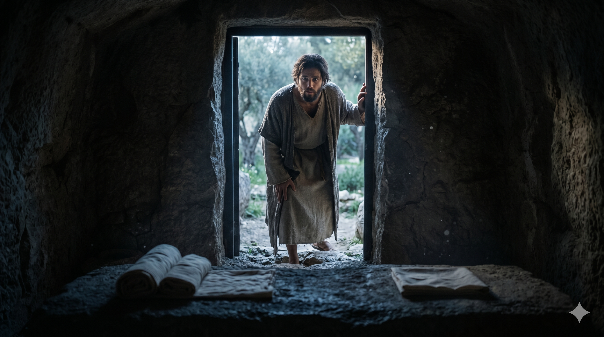

이른 새벽, 빈 무덤을 향해 달려가는 베드로와 요한 — 예루살렘 골고다 새벽빛 속
둘이 같이 달음질하더니 그 다른 제자가 베드로보다 더 빨리 달려가서 먼저 무덤에 이르러 구부려 세마포가 놓인 것을 보았으나 들어가지는 아니하였더니 … 그 때에야 무덤에 먼저 갔던 그 다른 제자도 들어가 보고 믿더라 그들은 성경에 그가 죽은 자 가운데서 다시 살아나야 하리라 하신 말씀을 아직 알지 못하더라 — 요한복음 20:4–5, 8–9
막달라 마리아가 새벽 이른 시각 무덤에 갔다가 돌이 옮겨진 것을 발견하고 베드로와 요한에게 달려왔습니다. "주를 무덤에서 가져다가 어디 두었는지 모르겠다"는 마리아의 말을 듣고 두 사람은 즉시 달려갑니다. 요한복음 기자는 스스로를 "그 다른 제자"로 부르며 이 달리기 장면을 세밀하게 기록합니다. 요한이 베드로보다 먼저 도착했지만, 들어가지 않고 기다렸습니다. 베드로가 먼저 들어가 세마포와 수건이 가지런히 놓인 것을 봅니다. 그리고 요한이 뒤따라 들어가 보고 — 믿었습니다.
"믿더라"는 한 단어가 이 본문의 정점입니다. 요한복음 기자는 그 믿음이 어떤 성격인지도 솔직하게 밝힙니다. "성경에 그가 죽은 자 가운데서 다시 살아나야 하리라 하신 말씀을 아직 알지 못하더라." 그들은 아직 부활에 대한 완전한 이해가 없었습니다. 그럼에도 불구하고 빈 무덤 앞에서 요한은 믿었습니다. 이것이 신앙의 시작입니다. 모든 것을 이해한 다음 믿는 것이 아니라, 보여진 것 앞에서 먼저 무릎 꿇는 것입니다.

빈 무덤 안에서 세마포와 수건이 가지런히 놓인 것을 바라보는 요한의 뒷모습 — 새벽빛이 쏟아지는 돌문 앞
요한이 베드로보다 먼저 도착했으나 먼저 들어가지 않았습니다. 성급함이 아니라 기다림, 경쟁이 아니라 배려였습니다. 예수님의 품에 기대었던 그 사랑하는 제자는, 빈 무덤 앞에서도 자신을 내세우지 않았습니다. 우리는 종종 신앙의 자리에서도 누가 먼저인지, 누가 더 앞섰는지를 경쟁합니다. 그러나 부활의 진리는 경쟁 앞에서 드러나는 것이 아니라, 겸손하게 구부려 들여다볼 때 보입니다.
요한은 빈 무덤을 보고 믿었습니다. 다 이해하지 못했음에도 믿었습니다. 신앙은 완벽한 이해의 결과가 아닙니다. 의심과 질문이 남아 있어도, 보여진 것들 — 하나님이 지금까지 나의 삶에서 행하신 일들 — 앞에서 무릎을 꿇는 것이 믿음입니다. 오늘 당신이 이해할 수 없는 상황 앞에 있다면, 요한처럼 그 빈 무덤 앞에 구부려 들어가 보십시오. 거기서 믿음이 시작됩니다.
요한은 먼저 도착했으나 먼저 들어가지 않았습니다.
그리고 들어가 보고 — 믿었습니다.
모든 것을 이해한 다음 믿는 것이 아니라,
빈 무덤 앞에서 먼저 무릎 꿇는 것이 신앙입니다.